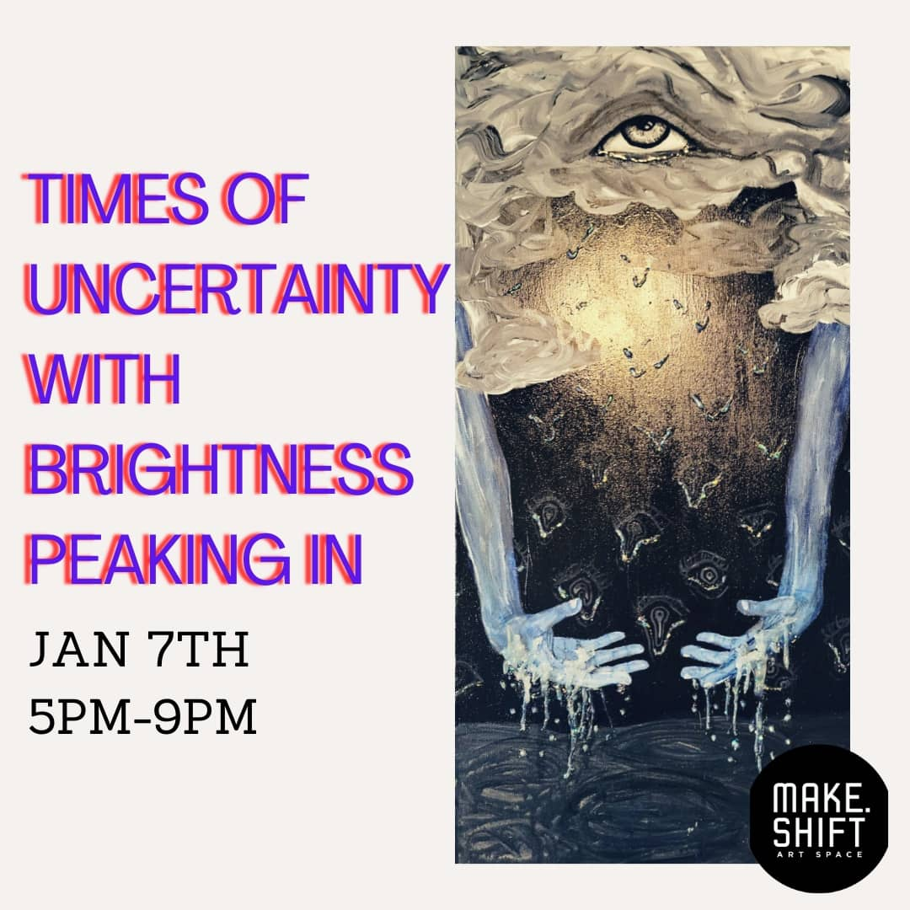

Shattered Reflections
Glass/Acrylic on canvas
The art in this collection is focused on the oft contradictory feelings of being percieved by oneself and others.
A desire to be seen, loved, and supported. A fear of being inadequate, seen through, or misconstrued.
Our masks, created to hide from others perceptions, sometimes become so multi-layered that even self reflection feels like looking through clouded windows.

Stop looking at me
Marker on glass, acrylic on canvas
My aim with these pieces is to examine a dichotomy of desiring and abhorring perception of the self. Whether it is an act of self relection, or opening oneself up to be viewed by others, there is a fear laced craving in being seen. That fear arises partially from the past few years of physical and emotional isolation from the pandemic. It may also seep from the dissonance experienced in the various layers of masks worn by ourselves to function in the different versions of ourselves online, at work, with our loved ones, and alone.


Fear of Knowing and Not Believing
Acrylic/glass on canvas

The pieces in the Shattered Reflections Collection capture my feelings of anxiety around isolation, self-sabotage, and death- with a dissarrayed mixed media of glass, glue, and acrylic.

"Shattered Reflections" and "Fear of Knowing and not Believing" were both featured in the past Jan 2021 Makeshift Gallery exhibit